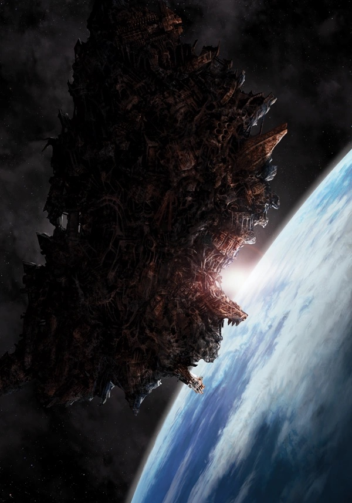

Space hulk
| Space hulk | |
|---|---|
| Wrecked voidships fused into a single drifting mass | |
 The space hulk Mortis Thule passes a world of the Jericho Reach Artwork © Games Workshop | |
| Type | Derelict vessel mass, usually a fusion of several ships and debris |
| Size | From a few hundred metres to many kilometres across; the largest recorded hulks have their own atmosphere and gravity |
| Origin | Wrecks of the Age of Technology, the Horus Heresy and later wars, joined and altered by the Warp |
| Known to | Adeptus Mechanicus, Imperial Navy, Inquisition, Orks, Genestealers, Chaos Space Marines |
| Notable hulks | |
| Sin of Damnation, Death of Integrity, Spawn of Damnation, Mortis Thule, Da Iron Worm, Fury, Forsaken Doom, Judgement of Carrion | |
A space hulk is a mass of wrecked starships and debris that the Imperium of Mankind has catalogued as a single object. Hulks are formed when several voidships are caught in the Warp and fused together, sometimes with asteroids, stations and other wreckage. The largest hulks are many kilometres across. Some have their own atmosphere and gravity, and some carry ecosystems that have grown inside the wreckage over centuries.[a]
Hulks are dangerous because they move in a way that cannot be predicted. They drift through realspace, enter the Warp and return at intervals that Imperial scholars have never fully explained. Any force aboard a hulk when it changes state may be carried away with it. For this reason Imperial orders require every hulk sighting to be reported, and the Imperial Navy treats a hulk in a populated system as a threat until it has been surveyed.[1]
Formation and behaviour
[edit]How hulks form
[edit]Imperial scholars hold that most hulks are wrecks from the Age of Technology and the wars of the 30th and 31st millennia. Ships lost in battle drifted into the Warp, where their hulls were fused with other wrecks. The process is not understood, but its results are consistent. A hulk's core is usually the oldest and largest vessel, and its outer shell is made of newer wrecks that have been pulled in over time.[1]
The Adeptus Mechanicus holds that some hulks were not formed by accident. Its magi have recorded hulks that appear to be shaped by Warp currents, and that carry technology from many ages in one mass. These claims are not accepted by the wider Imperium.[2]
Realspace and the Warp
[edit]A hulk can exit and re-enter the Warp without warning. The direction of its jump is random, so a hulk that is far from a system may arrive at a point close to a world within hours, and a hulk that is close may vanish. This randomness has given hulks a use in war. Enemies can hide in a hulk, and a hulk can carry an assault force into a system without being seen until it has arrived.[1]
Because of this, Imperial commanders record every hulk's last known position and treat its next appearance as a possible attack. Imperial doctrine also holds that a hulk in the Warp can carry a cargo of stasis-locked soldiers, who may wake when the hulk returns to realspace.[1]
Genestealer infestations
[edit]Many hulks are used by the Genestealers of the Tyranids as breeding grounds. A voidship that falls to a Genestealer infestation is taken over, its crew killed or converted, and its hold filled with broods. Imperial scholars believe that some hulks have been seeded deliberately, with Genestealers placed in stasis to wait for the Hive Fleet that will arrive later. The infested hulks are considered doubly dangerous, since they carry the risk of a Tyranid invasion as well as the danger of the wreck itself.[3]
The Genestealer Cults have also used hulks to bring their followers to new worlds. A hulk that enters a system can seed a cult before it is discovered, and some cults have been found in systems where a hulk was seen years earlier.[3]
Boarding actions
[edit]Because hulks are large and their interiors are dark, the Imperium usually sends elite troops to clear them. The Adeptus Astartes Terminators of a Chapter's first company are the usual choice. They wear Tactical Dreadnought Armour, carry heavy weapons and are trained in close fighting in confined spaces. A typical boarding action uses teleporter insertion or drop pods and then advances through the hulk one section at a time, sealing each section behind them as they go.[4]
Boarding is costly. Terminators have been lost in large numbers, and some actions have failed entirely. Where the enemy is too strong, too close to a vital world, or cannot be cleared in time, the Imperium may choose to destroy the hulk. Hulks are durable, and Imperial accounts record several that survived bombardment by Nova Cannon fire.[4]
The Sin of Damnation
[edit]The most famous hulk in Imperial records is the Sin of Damnation. The Blood Angels assaulted it in 996.M40, and the campaign was a disaster. The Chapter was driven back by an unending tide of Genestealers and only fifty Blood Angels are recorded as surviving the withdrawal. The year is given as 996.M40 in the surviving Blood Angels accounts.[b] The Chapter returned to the hulk in 589.M41. Under the command of Captain Michaelus Raphael, eighty Terminators are recorded to have slain more than forty thousand Genestealers and taken the hulk, which the Chapter considers a restoration of its honour.[5]
The Death of Integrity
[edit]In 887.M39 the hulk Death of Integrity was sighted near Vol Secundus. The Blood Drinkers and Novamarines sent their first companies in response, and the two Chapters together deployed nearly two hundred Terminators aboard the wreck. Over two solar months they cleared a Genestealer infestation from its ruins. Deep in the hulk they found a well-preserved Standard Template Construct database, which held the data of many lost technologies. The Adeptus Mechanicus accepted the database and repaid both Chapters with a new strike cruiser.[2]
Orks and hulks
[edit]The Orks use hulks as ships, bases and battle-sites. An Ork crew will break into a hulk, claim it as a rok or hulk, and use it to carry a Waaagh! across the stars. Imperial records describe Ork hulks being sent into systems in the path of Imperial fleets, where the ship's own engines and weapons are used to batter a defence. Some Ork hulks have been destroyed by their own crews, and the Da Iron Worm, an Ork-crewed hulk that ravaged the Uhulis Sector in the 32nd millennium, was lost when a Warp storm carried it into the Dark Marches.[6]
Ork hulks are often dangerous for Imperial forces because the Orks are willing to fight in the hulk's own interior, where Imperial tanks and fleets cannot follow.[6]
Recovery and the Adeptus Mechanicus
[edit]Hulks often hold technology from the Age of Technology that the Imperium cannot make again. For this reason the Adeptus Mechanicus takes part in almost every hulk operation. Its recovery teams follow the Terminators into the wreck and remove archeotech, data-cores and the remains of older vessels before the hulk leaves the system. The Mechanicus has also sent its own forces to hulks it wished to claim, as with the hulk Fury, whose Mechanicus crew kept a hold on its core for many millennia.[2]
The Imperial Navy surveys hulks and reports their positions. Its procedures require a hulk to be recorded with its last known position and assigned to a fleet for watch. Where a hulk threatens a populated world, the Navy may order it destroyed, and the Adeptus Mechanicus must give its consent before any recoverable technology is lost.[1]
Famous hulks
[edit]- Sin of Damnation: the hulk that broke the Blood Angels in 996.M40 and was retaken in 589.M41.
- Death of Integrity: the hulk that held an STC database, cleared in 887.M39.
- Spawn of Damnation: a conglomeration of wrecked voidships some five kilometres across, first sighted in 447.M36 and captured by the Reclaimers in 928.M41.
- Mortis Thule: the largest hulk known in the Jericho Reach, older than many hulks of its kind.
- Forsaken Doom: a Genestealer-infested hulk cleared by Terminators of the Blood Angels near the Forge World of Gorgonum.
- Judgement of Carrion: a hulk boarded by the Blood Ravens in the 41st millennium.
Timeline
[edit]| Date | Event | Place |
|---|---|---|
| c. 447.M36 | The hulk Spawn of Damnation is first sighted[c] | Spinward Drift |
| 887.M39 | The Death of Integrity is cleared of Genestealers by the Blood Drinkers and Novamarines | Vol Secundus |
| mid-M32 | The Ork hulk Da Iron Worm ravages the Uhulis Sector | Uhulis Sector |
| 996.M40 | The Blood Angels assault the Sin of Damnation and lose most of their Chapter[d] | Sin of Damnation |
| 589.M41 | The Blood Angels retake the Sin of Damnation under Captain Michaelus Raphael | Sin of Damnation |
| 781.M41 | The Spawn of Damnation appears briefly in the Viridia System and seeds a Genestealer Cult | Viridia System |
| 928.M41 | The Genestealer Cult on Viridia rises; the Reclaimers and Commissar Cain board the Spawn of Damnation in the Serendipita System | Serendipita System |
| 948.M41 | The Spawn of Damnation returns to the Warp and is lost | Warp |
| 41st millennium | The Fury emerges near Iax and is purged of Chaos by the Ultramarines | Iax |
| 41st millennium | Blood Ravens boarding in the Aurelian Sub-sector: the Judgement of Carrion | Aurelian Sub-sector |
| M41 | The Forsaken Doom is cleared near Gorgonum by Blood Angels Terminators | Gorgonum |
| M42 | Hulks remain a standing threat to every Segment; the Navy keeps watch on the registry | Galaxy-wide |
See also
[edit]Notes
[edit]- ^ The Imperial catalogue gives the sizes of only a few hulks. The rest are estimated from sensor returns.
- ^ Only one surviving account gives this year; the Chapter's own records were partly lost in later fighting.
- ^ Estimated from the first Imperial sighting; no record gives the exact date.
- ^ Imperial records give differing years for this campaign.
References
[edit]- ^ a b c d e Counter, Ben. The Bleeding Chalice (novel). Black Library. Kearney, Paul. Calgar's Fury (novel). Black Library.
- ^ a b c Mitchell, Sandy. Duty Calls (novel). Black Library. The Emperor's Finest (novel) by Sandy Mitchell.
- ^ a b Soul Drinker (novel) by Ben Counter. Codex: Chaos Space Marines (4th Edition), pg. 57. Games Workshop.
- ^ a b Citadel Journal 7, "The Designer's Cut: Alternate Rules (Space Hulk)," by Richard Halliwell, pp. 4-11. Bligh, Alan. The Horus Heresy - Book Four: Conquest (Forge World Series). Black Library, pg.37-40.
- ^ Victories of the Space Marines (Anthology) edited by Christian Dunn, "The Long Games at Carcharias" by Rob Sanders. Space Hulk: Rulebook (3rd Edition) (RPG), by Richard Halliwell. Games Workshop.
- ^ a b White Dwarf 133 (US), "Genestealer Invasion: Campaign Missions," by Dean H. Bass, pp. 36-38. White Dwarf 142 (US), "Space Hulk - Questions and Answers: Part One," by Simon Forrest, pp. 12-19.